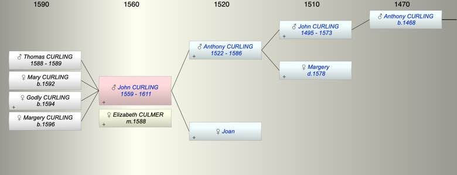

| [Index] |
| John CURLING (1559 - 1611) |
|  |
| b. abt 1559 |
| m. 03 Jun 1588 Elizabeth CULMER at St Laurence |
| d. 1611 at St Laurence aged 52 |
| Parents: |
| Anthony CURLING (1522 - 1586) |
| Joan |
| Siblings (5): |
| Joan CURLING (1555 - ) |
| Thomas CURLING (1557 - 1593) |
| Margery CURLING (1561 - ) |
| Anthony CURLING (1562 - ) |
| Rabidge CURLING (1565 - ) |
| Children (4): |
| Thomas CURLING (1588 - 1589) |
| Mary CURLING (1592 - ) |
| Godly CURLING (1594 - ) |
| Margery CURLING (1596 - ) |
| Events in John CURLING (1559 - 1611)'s life | |||||
| Date | Age | Event | Place | Notes | Src |
| abt 1559 | John CURLING was born | ||||
| 1586 | 27 | Death of father Anthony CURLING (aged 64) | St Laurence | Note 1 | |
| 1588 | 29 | Birth of son Thomas CURLING | Note 2 | ||
| 03 Jun 1588 | 29 | Married Elizabeth CULMER | St Laurence | Note 3 | |
| 1589 | 30 | Death of son Thomas CURLING (aged 1) | Note 4 | ||
| 1592 | 33 | Birth of daughter Mary CURLING | Note 5 | ||
| 1594 | 35 | Birth of daughter Godly CURLING | Note 6 | ||
| 1596 | 37 | Birth of daughter Margery CURLING | Note 7 | ||
| 1611 | 52 | John CURLING died | St Laurence | Note 8 | |
| Death of mother Joan | 1582 or 1588 at St L? | ||||
| Created on a Mac™ using iFamily for Mac™ on 8 Oct 2023 |